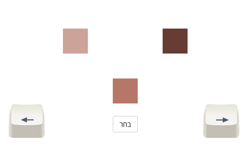

<!DOCTYPE html>
<html>

<head>
    <link rel="stylesheet" href="https://cdnjs.cloudflare.com/ajax/libs/normalize/5.0.0/normalize.min.css">
    <link rel="stylesheet" href="https://cdn.jsdelivr.net/npm/bootstrap-icons@1.3.0/font/bootstrap-icons.css"/>
    <link type="text/css" rel="stylesheet"
          href="https://stackpath.bootstrapcdn.com/bootstrap/4.5.2/css/bootstrap.min.css">

    <link rel="stylesheet" href="pkg/jspsych/css/jspsych.css">

    <link rel="stylesheet" href="style/style.css">
    <link rel="stylesheet" href="style/tutorial.css">
    <link rel="stylesheet" href="style/audioManager.css">

    <script src="https://cdnjs.cloudflare.com/ajax/libs/seedrandom/2.3.10/seedrandom.min.js"></script>
    <script src="https://code.jquery.com/jquery-3.6.0.js"></script>
    <script src="https://cdn.jsdelivr.net/npm/bootstrap@4.5.3/dist/js/bootstrap.bundle.min.js"
            integrity="sha384-ho+j7jyWK8fNQe+A12Hb8AhRq26LrZ/JpcUGGOn+Y7RsweNrtN/tE3MoK7ZeZDyx"
            crossorigin="anonymous"></script>
    <script src="https://cdnjs.cloudflare.com/ajax/libs/mediaelement/5.0.4/mediaelement.min.js"
            integrity="sha512-s1KfERWE9vcMRgGHTYf5vrRZ9MdDG4bydmBHQVBf+SkJeRRzqH4DAQSqTUxn3Gi6jfqORCRVKipPCdWD7UHPfQ=="
            crossorigin="anonymous" referrerpolicy="no-referrer"></script>
    <script src="pkg/jspsych/jspsych.js"></script>
    <script src="pkg/jspsych/plugins/jspsych-html-keyboard-response.js"></script>
    <script src="pkg/jspsych/plugins/jspsych-reconstruction.js"></script>
    <script src="pkg/jspsych/plugins/jspsych-instructions.js"></script>
    <script src="pkg/jspsych/plugins/jspsych-html-slider-response.js"></script>
    <script src="pkg/ColorConverter.js"></script>
    <script src="https://cdn.jsdelivr.net/npm/lodash@4.17.21/lodash.min.js"></script>
    <script src="https://cdnjs.cloudflare.com/ajax/libs/chance/1.1.8/chance.min.js"
            integrity="sha512-dELYIOEzIECWdvsEdoywFOB4qKDmtQee33yD0dQnzAE7eBGKJ984VQXRLs/vlsP4Sb3VchbQL7iAy4NWqetCsw=="
            crossorigin="anonymous" referrerpolicy="no-referrer"></script>
    <script src="js/blockingtimer.js"></script>
    <script src="js/pressevents.js"></script>
    <script src="js/env.js"></script>
    <script src="js/audioManager.js"></script>
    <script src="js/randomizer.js"></script>
</head>

<body>
</body>

<script>
    // Original Code (modified by Ophir Gal)
    // global constants & variables
    const DEFAULT_HINT_DELAY = 20
    const DEFAULT_SAMPLE_SIZES = [5]
    const EXTREME_LEFT = 0.25
    const EXTREME_RIGHT = 0.75
    var maxLight = 70
    var minLight = 30
    var counter
    var color
    var showHint
    var selectedHint
    var randomSampleSize = null
    var trial_data
    var trial_start_time
    var hintWasJustShown = false
    var valueBeforeHintWasShown
    let tutorialClicks = 20
    var tutorialStyle
    let prevValue = -1
    let currentValue = -1
    const audioFiles = {
        mindfulness_long: "./assets/music/Mindfulness-long.m4a",
        mindfulness_short: "./assets/music/Mindfulness-short.m4a",
        relaxing_long: "./assets/music/Relaxing-long.mp3",
        relaxing_short: "./assets/music/Relaxing-short.mp3",
    };
    // let currentParticipant = -1;
    const numOfParticipants = 200;
    let randomParticipants = [...Array(numOfParticipants).keys()]
        .map(x => x % 2 === 0 ? "groupA" : "groupB");

    function getRandomInt(randomGenerator, min, max) { // Gets a random value between min and max. 
        min = Math.ceil(min);
        max = Math.floor(max + 1);
        return Math.floor(randomGenerator() * (max - min) + min);
    }

    function getRandomColor(randomGenerator) {  // Gets a random color in hex
        var letters = '0123456789ABCDEF';
        var color = '#';
        for (var i = 0; i < 6; i++) {
            color += letters[Math.floor(randomGenerator() * 16)];
        }
        return color;
    }

    function recordHintReliance(param) {
        if (hintWasJustShown) {
            console.log("recording")
            console.log(param)
            hintWasJustShown = false // Since hint is shown once per experiment, this ensures us that we won't record hint reliance again.
            let current_value = Number((1 - param).toFixed(2))
            if ((selectedHint === 'neither')
                || (selectedHint === 'increase' && current_value > valueBeforeHintWasShown)
                || (selectedHint === 'decrease' && current_value < valueBeforeHintWasShown)) {
                trial_data.hintsFollowed += 1
            } else {
                trial_data.hintsIgnored += 1
            }
        }
    }

    var sample_function = function (param,
                                    randomGenerator,
                                    withHints,
                                    randomizedSampleSize,
                                    hintDelay,
                                    shouldHintAccurately,
                                    numPressesBeforeHintExp1,
                                    title,
                                    phase) {
        console.log("BEFORE", currentValue)

        let tutorial = '';
        let hideLeft = false;
        let hideRight = false;
        const tutorialClicksBeforeCalc = tutorialClicks;
        if (title === 'practice 1' && phase === 0) {
            if (tutorialClicks > 0) {
                currentValue = Number((1 - param).toFixed(2));
                if (tutorialClicks > 10) {
                    if (prevValue !== -1 && currentValue > prevValue) {
                        tutorialClicks--;
                    }
                }
                if (tutorialClicks <= 10) {
                    if (currentValue < prevValue) {
                        tutorialClicks--;
                    }
                }

                prevValue = currentValue;
            }

            if (tutorialClicks > 10) {
                hideLeft = true;
                tutorial += "<div id='speech-bubble-right'>לחצו על המקש הימני עשר פעמים. שימו לב כיצד הצבע בריבוע האמצעי הופך לכהה יותר עם כל לחיצה. </div>"
            } else if (tutorialClicks > 0) {
                hideRight = true;
                tutorial += "<div id='speech-bubble-left'>חזרו על אותן הפעולות עם המקש השמאלי, וראו כיצד הצבע מתבהר. </div>"
            } else {
                tutorialClicks--;
                tutorial += "<div id='speech-bubble-choose'> כעת נסו למצוא את נקודת האמצע. השתמשו בחצים כפי שעשיתם עד כה. כשאתם סבורים\n" +
                    "            שמצאתם את נקודת האמצע, לחצו על כפתור \"בחר\" באמצעות העכבר. לאחר שתלחצו על כפתור זה, יופיעו בזה אחר זה מספר\n" +
                    " רצפים נוספים. התנסו בהם באופן דומה.\n</div>";
            }

            if (tutorialClicks === 20) {
                style = document.createElement('style');
                style.type = 'text/css';
                style.innerHTML = `
                .jspsych-btn {
                    background: transparent;
                    border: none !important;
                    font-size:0;
                }
                `;
                tutorialStyle = document.getElementsByTagName('head')[0].appendChild(style);
            } else if (tutorialClicks === -1) {
                document.getElementsByTagName('head')[0].removeChild(tutorialStyle);
            }
        }

        if (isHintTimerActivated()) {
            // Make sure we don't process input while hint timer is on.
            return document.querySelector('#trial').parentNode.innerHTML;
        }

        // hide existing hint (if one is displayed)
        for (let hintName of ['neither', 'increase', 'decrease']) {
            let hintElement = document.getElementById(`hint-${hintName}`)
            if (hintElement && !hintElement.classList.contains('d-none')) {
                hintElement.classList.toggle('d-none')
            }
        }

        midLightVal = minLight + (param * (maxLight - minLight))
        var size = 50;

        counter++;

        //Transform hex to hsl. 
        var hslBrightColor = hexToHSL(color)
        var hslDarkColor = hexToHSL(color)
        var hslMidRandColor = hexToHSL(color)

        //Choose on one continum the lightest (70%), darkest (30%) and a random mid. 
        hslDarkColor['l'] = minLight
        hslBrightColor['l'] = maxLight
        hslMidRandColor['l'] = midLightVal

        //Transform back to hex, to feet the html string. 

        var hexBrightColor = HSLToHex(hslBrightColor['h'], hslBrightColor['s'], hslBrightColor['l'])
        var hexDarkColor = HSLToHex(hslDarkColor['h'], hslDarkColor['s'], hslDarkColor['l'])
        var hexMidRandColor = HSLToHex(hslMidRandColor['h'], hslMidRandColor['s'], hslMidRandColor['l'])
        console.log(hslMidRandColor, hexMidRandColor)

        showHint = async function () {
            // Disable hint button to allow one hint per trial.
            document.getElementById("hint-btn").disabled = true

            if (selectedHint) {
                let hintElement = document.getElementById(`hint-${selectedHint}`)
                if (!hintElement.classList.contains('d-none')) {
                    return
                }
            }

            // record click to current trial's data
            let seconds_since_start = (new Date().getTime() - trial_start_time) / 1000
            trial_data.hintClicks.push(Number(seconds_since_start.toFixed(2)))

            // increment amount of hint clicks for current trial
            trial_data.numHintClicks += 1

            // start the timer for DEFAULT_HINT_DELAY seconds (and wait till done)
            hintDelay ? await startTimer(hintDelay, hexBrightColor, hexMidRandColor, hexDarkColor) : null;

            // decide on hint to provide based on hintAccuracy & current value
            current_value = Number((1 - param).toFixed(2))
            if (shouldHintAccurately || current_value <= EXTREME_LEFT || current_value >= EXTREME_RIGHT) {
                // provide helpful hint
                if (current_value >= 0.48 && current_value <= 0.52) {
                    selectedHint = 'neither'
                } else if (current_value < 0.5) {
                    selectedHint = 'increase'
                } else if (current_value > 0.5) {
                    selectedHint = 'decrease'
                }
            } else {  // provide *misleading* hint (as long as value is not "extreme")
                selectedHint = current_value < 0.5 ? 'decrease' : 'increase'
            }

            // show hint if not already visible
            document.getElementById(`hint-${selectedHint}`).classList.remove('d-none')

            // remember a hint was just shown and the value before showing it
            hintWasJustShown = true
            valueBeforeHintWasShown = current_value
        }

        // record whether participant followed what the last hint suggested
        recordHintReliance(param)

        if (randomSampleSize === null) {
            randomSampleSize = String(randomizedSampleSize)
            trial_data.hintSampleSize = randomSampleSize // record sample size
        }

        const imgSize = 50;
        //Define the three squares sizes and locations and hint button. 
        const arrows = `
            `;

        const displayedHint = `
            <div id="hint-neither" class="d-none hint">
                <i class="bi bi-check-circle" style="position: absolute; top: ${-130 + imgSize / 2}px; right: ${(150 - imgSize / 2)}px; font-size:40pt"></i>
                <h3 style="position: absolute; top: ${-80 + imgSize / 2}px; right: ${150 - imgSize / 2}px; font-size:40pt">
                    <i class="bi bi-people-fill"></i>
                </h3>
            </div>
            <div id="hint-increase" class="d-none hint">
                <i class="bi bi-arrow-right" style="position: absolute; top: ${150 - imgSize / 2}px; left: ${500 - imgSize / 2}px; font-size:40pt"></i>
                <h3 style="position: absolute; top: ${130 - imgSize / 2}px; left: ${400 - imgSize / 2}px; font-size:40pt"><i class="bi bi-people-fill"></i></h3>
            </div>
            <div id="hint-decrease" class="d-none hint">
                 <i class="bi bi-arrow-left" style="position: absolute; top: ${150 - imgSize / 2}px; right: ${500 - imgSize / 2}px; font-size:40pt"></i>
                <h3 style="position: absolute; top: ${80 + imgSize / 2}px; right: ${400 - imgSize / 2}px; font-size:40pt"><i class="bi bi-people-fill"></i></h3>
            </div>
    `;

        const hintIndex = `
            <div style="background: #B1D4E0; border-radius: 5px; padding: 20px; align-items: flex-start; justify-content: space-between; height: 200px; width: 700px; right: -202px; top: 410px; display: ${title === 'practice 3' ? 'flex' : 'none'}; position: absolute; flex-direction: column; border: 1px solid black">
                <div style="align-items: center; display: flex; justify-content: space-around;">
                    <div style="display: flex; width: 60px; justify-content: space-around; padding-left: 10px;">
                        <i class="bi bi-arrow-right" style="font-size:16pt; padding-top: 5px;"></i>
                        <h3 style="font-size:20pt"><i class="bi bi-people-fill"></i></h3>
                    </div>
                    <span>מרבית הנבדקים במדגם עבר המשיכו עוד ימינה בנקודה זו, ובחרו בצבע כהה יותר.</span>
                </div>
                <div class="divider" style="height: 1px; background: #666666; width: 100%; opacity: 0.5;"></div>
                <div style="align-items: center; display: flex; justify-content: space-around;">
                    <div style="display: flex; width: 60px; justify-content: space-around; padding-left: 10px;">
                        <h3 style="font-size:20pt"><i class="bi bi-people-fill"></i></h3>
                        <i class="bi bi-arrow-left" style="font-size:16pt; padding-top: 5px;"></i>
                    </div>
                    <span>מרבית הנבדקים במדגם עבר המשיכו עוד שמאלה בנקודה זו, ובחרו בצבע בהיר יותר.</span>
                </div>
                <div class="divider" style="height: 1px; background: #666666; width: 100%; opacity: 0.5;"></div>
                <div style="align-items: center; display: flex; justify-content: space-around; margin: -15px">
                    <div style="display: flex;flex-direction: column; width: 60px; justify-content: space-around;">
                        <i class="bi bi-check-circle" style="font-size:16pt; padding-top: 10px;"></i>
                        <h3 style="font-size:20pt"><i class="bi bi-people-fill"></i></h3>
                    </div>
                    <span>מרבית הנבדקים במדגם עבר בחרו בצבע המופיע כעת כתשובתם הסופית.</span>
                </div>
            </div>
        `;

        const sanityCheck = getSanityCheck(phase, title);

        const hintButton = `
        <button id="hint-btn" class="m-5 btn btn-primary ${(withHints === 'with hints') || selectedHint ? '' : 'd-none'}" style="position: fixed; top:0px; right: 0px" 
            ${selectedHint ? 'disabled' : 'onclick="showHint()"'}>
            <h5>לחצו לקבלת רמז <i class="bi bi-lightbulb-fill align-text-top"></i></h6>
            <h5><i class="h4 bi bi-people-fill align-text-top"></i></h5>
        </button>
        `
        const colorSquares = '<div id="bright-square" style="display: block; position: absolute; top: ' + (150 - size / 2) + 'px; left:' + (50 - size / 2) + 'px; background-color: ' + hexBrightColor + '; ' +
            'width: ' + size + 'px; height: ' + size + 'px;"></div>' +
            '<div id="mid-square" style="display: block; position: absolute; top: ' + (150 - size / 2) + 'px; left:' + (250 - size / 2) + 'px; background-color: ' + hexDarkColor + '; ' +
            'width: ' + size + 'px; height: ' + size + 'px;"></div>' +
            '<div id="dark-square" style="display: block; position: absolute; top: ' + (250 - size / 2) + 'px; left:' + (150 - size / 2) + 'px; background-color: ' + hexMidRandColor + '; ' +
            'width: ' + size + 'px; height: ' + size + 'px;"></div>';

        return `
        <div id="trial" style="display: block; margin: auto; height: 300px; width: 300px; position: relative;">
        ` + sanityCheck + hintIndex + colorSquares + arrows + tutorial + displayedHint + "</div>" + hintButton;
    }

    const getSanityCheck = (phase, title) => {
        const shouldCheckInEx1 = phase === 27 && title === "experiment 1";
        const shouldCheckInEx2 = phase === 36 && title === "experiment 2";
        const darkOrLight = shouldCheckInEx1 ? "הכהה" : "הבהיר";
        if (shouldCheckInEx1 || shouldCheckInEx2) {
            return `
            <div id="sanity-check" style="right: -100px; position: absolute; bottom: 240px; border-radius: 5px; background: #B1D4E0; width: 500px; padding: 10px; display: flex; justify-content: center; align-items: center;">
                <span>בצעד זה אתם מתבקשים לבחור בצבע ${darkOrLight} ביותר אליו ניתן להגיע עם החצים. לאחר מכן, חזרו לשחק כרגיל.</span>
            </div>
            `;
        }
        return `<div></div>`
    }

    const create_question = function (timeline, type) {
        if (type === 'confidence') {
            const responce = {
                type: 'html-slider-response',
                class: 'question-slider',
                labels: ['1', '2', '3', '4', '5', '6', '7'],
                min: 1,
                max: 7,
                stimulus: "<p>באיזו מידה הרגשת שאתה מחובר לאינטואיציות ולתחושות הפנימיות שלך במהלך הניסוי?</p> <p>(1 = לא מחובר כלל, 7 = מחובר מאוד)</p>",
                button_label: 'המשך',
            };
            timeline.push(responce);
        }
    }

    //gets a random color on each trial and resets the counter (that count the number of key presses)
    var on_start_trial = function (randomGenerator) {
        const randomizedColor = getRandomColor(randomGenerator)
        return function (trial) {
            color = randomizedColor
            counter = -1
            trial_start_time = new Date().getTime() // set trial start time in MS
            trial_data = { // resetting global trial_data variable
                numberOfPresses: 0,
                hintSampleSize: -1, // will be set to one of {5, 15, 50}
                hintClicks: [], // will record timestamps of hint clicks (seconds after trial start)
                numHintClicks: 0, // will record amount of hint clicks
                hintsFollowed: 0, // will record amount of hints followed
                hintsIgnored: 0, // will record amount of hints ignored
                title: trial.data.title
            }
            // setting current trial's data to the global trial_data variable
            // (crucial to allow for global access)
            trial.data = trial_data
        }
    }

    //gets the number of presses at the end of every trial.  
    var on_finish_trial = function (data, withFeeback) {
        recordHintReliance(data.final_value) // In case user didn't press anything after receiving hint.
        data.numberOfPresses = counter
        selectedHint = undefined  // reset selectedHint (MUST BE AFTER recordHintReliance())
        randomSampleSize = null
        // correcting start and final values at end of trial
        data.final_value = Number((1 - data.final_value).toFixed(2))
        data.start_value = Number((1 - data.start_value).toFixed(2))
        if (withFeeback === 'with feedback') {
            // feedback for the practice trial
            console.log('trying to trigger modal')
            let div = document.querySelector('#feedback-wrap-div') ?
                document.querySelector('#feedback-wrap-div') : document.createElement('div')
            div.id = 'feedback-wrap-div'
            div.innerHTML = `
            <!-- Feeback Modal -->
            <div class="modal fade" id="feedbackModal"  role="dialog"
                aria-labelledby="feedbackModalLabel" aria-hidden="true" 
                data-backdrop="static" data-keyboard="false">
                <div class="modal-dialog modal-dialog-centered" role="document">
                    <div class="modal-content">
                        <div class="modal-body text-right" id="modal-body-div">
                            <p>הניקוד עבור הצבע שבחרת הוא: ${(data.final_value * 100).toFixed(0)}</p>
                            
                            <div class="jspsych-html-slider-response-container" style="position:relative; margin: 0 auto 3em auto; width:auto;">
                                <input type="range" class="jspsych-slider" value="${(1 - data.final_value) * 100}" min="0" max="100" step="1" id="jspsych-html-slider-response-response" disabled>
                                <div>
                                    <div style="border: 1px solid transparent; display: inline-block; position: absolute; left:calc(0% - (100% / 2) - -7.5px); text-align: center; width: 100%;">
                                        <span style="text-align: center; font-size: 80%;">0</span>
                                    </div>
                                        <div style="border: 1px solid transparent; display: inline-block; position: absolute; left: 0; text-align: center; width: 100%;">
                                        <div style="display: flex; flex-direction: column;">
                                            <div style="height: 20px; width: 1px; bottom: 57px; background: black; right: 50%; position: absolute;"></div>
                                            <span style="text-align: center; font-size: 80%;">50</span>
                                            <span style="text-align: center; font-size: 80%;">נקודת האמצע</span>
                                        </div>
                                    </div>
                                    <div style="border: 1px solid transparent; display: inline-block; position: absolute; left:calc(100% - (100% / 2) - 7.5px); text-align: center; width: 100%;">
                                        <span style="text-align: center; font-size: 80%;">100</span>
                                    </div>
                                </div>
                            </div>
                        </div>
                        <div class="modal-footer">
                            <button type="button" class="btn btn-primary"
                            data-dismiss="modal">אוקיי ✓</button>
                        </div>
                    </div>
                </div>
            </div>
            `
            document.body.appendChild(div)
            $('#feedbackModal').modal('show')
        }
    }

    // trials
    var create_trials = function (
        timeline,
        numOfTrials,
        title,
        withFeeback = "no",
        withHints = "no",
        sampleSizes = DEFAULT_SAMPLE_SIZES,
        hintDelay = DEFAULT_HINT_DELAY,
        hintAccuracy = 1.0
    ) {
        for (var i = 0; i < numOfTrials; i++) {
            const fixedIndex = i;
            // Pre-calculate to ensure random order after seeding.
            var randomGenerator = new Math.seedrandom(title + String(fixedIndex));
            const midLightVal = getRandomInt(randomGenerator, minLight, maxLight);
            const numPressesBeforeHintExp1 = isConditionA() ? -1 : getRandomInt(randomGenerator, 3, 7);
            const shouldHintAccurately = randomGenerator() <= hintAccuracy;
            const randomizedSampleSize = sampleSizes[Math.floor(randomGenerator() * sampleSizes.length)]

            var trial = {
                type: "reconstruction",
                stim_function: (param) =>
                    sample_function(
                        param,
                        randomGenerator,
                        withHints,
                        randomizedSampleSize,
                        hintDelay,
                        shouldHintAccurately,
                        numPressesBeforeHintExp1,
                        title,
                        fixedIndex,
                    ),
                starting_value: (midLightVal - minLight) / (maxLight - minLight),
                step_size: 0.02, // lower step size, makes it harder.
                button_label: "בחר",
                key_increase: "leftarrow",
                key_decrease: "rightarrow",
                on_start: on_start_trial(randomGenerator),
                data: {
                    // will be modified in on_start_trial()
                    title: title,
                },
                on_finish: (data) => on_finish_trial(data, withFeeback),
            };
            timeline.push(trial);
        }
        return timeline;
    };

    // instructions
    const create_instructions = function (timeline, type) {
        let instructions
        switch (type) {
            case 'participant id':
                instructions = {
                    type: 'instructions',
                    pages: [`
                        <div class="instructions" id="participant-id">
                            <span>מספר הנבדק שהוכנס: #${getCurrentParticipantOrElse()}</span>
                        </div>
                    `],
                    show_clickable_nav: isCurrentUserValid(),
                    button_label_next: 'הבא',
                    button_label_previous: 'הקודם',
                    allow_keys: true,
                    key_forward: 'leftarrow',
                    key_backward: 'rightarrow',
                }
                break;

            case 'manipulation_long':
                const audioFileLong = isGroupA() ? audioFiles.mindfulness_long : audioFiles.relaxing_long;
                console.log(audioFileLong)
                instructions = {
                    type: 'instructions',
                    pages: [`
                        <div>
                            <h1>ברוכים הבאים לניסוי בחירת הצבע!</h1><br/>
                            <p>
                            לפני תחילת משחק בחירת הצבע, תאזינו לקטע אודיו קצר שאורכו 10 דק. לשם כך אתם מתבקשים לשים את האוזניות שלרשותכם וללחוץ על כפתור Play.<br/>
                            שימו לב שהקטע יופעל ברצף ולא ניתן לעשות הפסקות במהלכו.<br/>
                            בסיום ההאזנה, הורידו את האוזניות ולחצו על כפתור ״הבא״ בכדי להתחיל במשחק.
                            </p>
                            <div id="audio-player-container" class="instructions">
                                <audio id="audio-file"
                                src='${audioFileLong}'}
                                controls
                                controlslist="nodownload noplaybackrate nofullscreen no remoteplayback"
                                onPlay="disableAudioPlayer()"
                                onended="resumeProgressWhenDonePlaying()"/>
                            </div>
                        </div>
                    `],
                    on_load: blockProgressWhilePlaying,
                    show_clickable_nav: true,
                    button_label_next: 'הבא',
                    button_label_previous: 'הקודם',
                    allow_keys: true,
                    key_forward: 'leftarrow',
                    key_backward: 'rightarrow',
                }
                break;

            case 'manipulation_short':
                const audioFileShort = isGroupA() ? audioFiles.mindfulness_short : audioFiles.relaxing_short;
                console.log(audioFileShort)
                console.log(randomParticipants);
                instructions = {
                    type: 'instructions',
                    pages: [`
                        <div>
                            <p>
                            כעת תאזינו לקטע אודיו נוסף שאורכו 50 שניות. לשם כך שימו שוב את האוזניות שברשותכם.<br/> בסיום הקטע לחצו על כפתור ״הבא״ והמשיכו במשחק.
                            </p>
                            <div id="audio-player-container" class="instructions">
                                <audio id="audio-file"
                                    src='${audioFileShort}'}
                                    controls
                                    controlslist="nodownload noplaybackrate nofullscreen no remoteplayback"
                                    onPlay="disableAudioPlayer()"
                                    onended="resumeProgressWhenDonePlaying()"/>
                            </div>
                        </div>
                    `],
                    on_load: blockProgressWhilePlaying,
                    show_clickable_nav: true,
                    button_label_next: 'הבא',
                    button_label_previous: 'הקודם',
                    allow_keys: true,
                    key_forward: 'leftarrow',
                    key_backward: 'rightarrow',
                }
                break;

            case 'start':
                instructions = {
                    type: 'instructions',
                    pages: [`
                        <div class="instructions">
                            <h1>משחק בחירת הצבע</h1><br/>

                            בכל סיבוב יוצגו בפניך שלושה ריבועים צבעוניים, באופן כזה:
                            <br/>
                            
                            <br/><br/>
                            שני הריבועים העליונים מציגים שני קצוות על רצף של צבע מסוים, כאשר הריבוע הימני מציג את הצבע בנקודה הכהה ביותר על אותו הרצף, והריבוע השמאלי מציג את הצבע בנקודה הבהירה ביותר על הרצף. הצבעים בריבועים הללו נותרים קבועים.
                            <br/><br/>
                            בתחילת כל צעד בניסוי הריבוע האמצעי יציג צבע במיקום אקראי בין שני קצוות הרצף, כך שלפעמים הוא יהיה קרוב יותר לצבע שבריבוע הימני (הקוטב הכהה) ולפעמים לצבע שבריבוע השמאלי (הקוטב הבהיר).
                            <br/><br/>
                            ניתן לשנות את מידת הבהירות של הריבוע האמצעי על ידי לחיצה על מקשי החצים:
                            <br/>
                                לחיצה על מקש החץ הימני תהפוך את הצבע בריבוע האמצעי לכהה יותר,
ולחיצה על מקש החץ השמאלי תהפוך את הצבע בריבוע האמצעי לבהיר יותר.
                        </div>
                    `, `
                        <div class="instructions">
                            <h1>מטרת המשחק</h1>
                            <br/>
                            מטרתכם במשחק היא למצוא את נקודת האמצע המדויקת ביותר בין שני הצבעים המופיעים בריבועים העליונים.
                            <br/><br/>
                            במהלך כל צעד בניסוי תוכלו לשנות את בהירות הצבע שבריבוע האמצעי ככל שתרצו. כאשר אתם סבורים כי הצבע המופיע בריבוע האמצעי מהווה את האמצע המדויק בין שני קצוות הרצף, לחצו על כפתור "בחר" באמצעות העכבר.
                            <br/>
                        </div>
                    `,],
                    show_clickable_nav: true,
                    button_label_next: 'הבא',
                    button_label_previous: 'הקודם',
                    allow_keys: true,
                    key_forward: 'leftarrow',
                    key_backward: 'rightarrow',
                }
                break;

            case 'practice 1':
                instructions = {
                    type: 'instructions',
                    pages: [`
                        <div class="instructions">
                            <h1>שלב האימון</h1>
                            <br/>
                            כעת יתחיל שלב האימון, שבו תוכלו להתנסות בתפעול ממשק המשחק. שימו לב כי ביצועיכם בשלב האימון לא ישוקללו בתוצאות הניסוי.
                            <br/><br/>
                            לחצו על "הבא" כדי להתחיל את שלב האימון של הניסוי.
                            <br/>
                        </div>
                    `],
                    show_clickable_nav: true,
                    button_label_next: 'הבא',
                    button_label_previous: 'הקודם',
                    key_forward: 'leftarrow',
                    key_backward: 'rightarrow',
                }
                break;

            case 'practice 2':
                instructions = {
                    type: 'instructions',
                    pages: [`
                        <div class="instructions">
                            <h1>שלב אימון 2</h1><br/>
                            בשלבי האימון הבאים תקבלו פידבק, שייאפשר לכם לשפר את ביצועיכם במשחק. בסיום כל צעד בניסוי, לאחר שתלחצו על כפתור "בחר", יוצג בפניכם פידבק המתייחס לתשובתכם. הפידבק יוצג הן באופן מספרי והן באמצעות ציר, כמו בדוגמה הבאה:
                            <br/>
                            <br/>
                            
                            <br/><br/>
                            הערך המוצג מתייחס למיקום של הצבע הנבחר על גבי רצף הבהירות. כאשר ערך זה הוא 50, המשמעות היא שהצבע שנבחר ע"י השחקן/ית נמצא בדיוק באמצע הרצף, כלומר, שהשחקן/ית הצליחו למצוא את נקודת האמצע המדויקת בין שני הקצוות.
                            <br/><br/>
                            בדוגמה זו התקבל הערך 61, כלומר, הצבע שנבחר כהה יותר מנקודת האמצע האמיתית.
                            <br/><br/>
                            ככל שהערך קרוב יותר ל-50, כך הוא מצביע על ביצוע מדויק יותר. ככל שהוא מתקרב ל0 (הקצה הבהיר ביותר) או ל100 (הקצה הכהה ביותר), הוא מצביע על ביצוע מדויק פחות.
                            <br/>
                        </div>
                    `],
                    show_clickable_nav: true,
                    button_label_next: 'הבא',
                    button_label_previous: 'הקודם',
                    key_forward: 'leftarrow',
                    key_backward: 'rightarrow',
                }
                break;

            case 'practice 3':
                instructions = {
                    type: 'instructions',
                    pages: [`
                        <div class="instructions">
                            <h1>שלב אימון 3</h1>
                            <br/>
                            בשלב האימון הבא, תוכלו לבקש רמז שיעזור לכם למצוא את נקודת האמצע המדויקת ביותר. את הרמז תוכלו לבקש באמצעות לחיצה על כפתור "לחצו לקבלת רמז".
                            <br/><br/>
                            הרמזים שתקבלו מבוססים על תשובותיהם של נבדקים ששיחקו בעבר במשחק.
                        </div>
                    `, `
                        <div class="instructions">
                            <h1>הרמזים במשחק</h1>
                            <br/>
                            בכל פעם שתבקשו רמז, יוצג על המסך חץ שמראה את הכיוון שאליו רוב הנבדקים המשיכו בנקודה זו במשחק. כך זה ייראה:
                            <br/>
                            
                            <br/><br/>
                            אם רוב הנבדקים בחרו בצבע כהה יותר מהצבע המוצג כעת בריבוע האמצעי (כלומר, המשיכו עוד ימינה על הרצף בטרם לחצו "בחר"), יופיע חץ שמורה ימינה, כמו בדוגמה הנ"ל.
                            <br/><br/>
                            באותו אופן, אם רוב הנבדקים בחרו בצבע בהיר יותר מהצבע המוצג כעת בריבוע האמצעי, יופיע חץ המורה שמאלה.
                            <br/><br/>
                            אם רוב הנבדקים בחרו כנקודת האמצע את הצבע המוצג כעת בריבוע האמצעי, יופיע סימן וי.
                            <br/><br/>
                            שימו לב!
                            <br/>
                            תוצאות הניסויים הקודמים הצביעו על רמות דיוק גבוהות, כך שבמרבית המקרים ניתן להסתמך על המידע הניתן ברמזים. עם זאת, הביצוע של משתתפי המשחקים הקודמים לא היה מושלם, ולכן בחלק קטן מהמקרים הרמז עלול להטעות.
                            <br/><br/>
                           על מנת שתלמדו להכיר את ממשק הרמז, לחצו על כפתור ״לחץ לקבלת רמז״ בכל אחד מצעדי האימון ושימו לב לרמזים השונים שאתם מקבלים.
                        </div>
                    `],
                    show_clickable_nav: true,
                    button_label_next: 'הבא',
                    button_label_previous: 'הקודם',
                    key_forward: 'leftarrow',
                    key_backward: 'rightarrow',
                }
                break;

            case 'experiment 1':
                instructions = {
                    type: 'instructions',
                    pages: [`
                        <div class="instructions">
                            <h1>שלב הניסוי</h1>
                            <br/>
                            סיימתם את שלב האימון במשחק בחירת הצבע!
                            <br/><br/>
                            כעת יתחיל המשחק עצמו, שבו תתבקשו להמשיך ולמצוא את הצבע שהינו נקודת האמצע בין שני הריבועים העליונים, כמו בשלב האימון.
                            <br/><br/>
                            מעתה ואילך ביצועיכם יירשמו וישוקללו בתוצאות הסופיות. שימו לב, הזמן בכל צעד אינו מוגבל. איכות הביצוע תיקבע על פי מידת הדיוק, ולא על פי קצב הביצוע.
                            <br/>
                        </div>
                    `],
                    show_clickable_nav: true,
                    button_label_next: 'הבא',
                    button_label_previous: 'הקודם',
                    key_forward: 'leftarrow',
                    key_backward: 'rightarrow',
                }
                break;

            case 'experiment 2':
                instructions = {
                    type: 'instructions',
                    pages: [`
                        <div class="instructions">
                            <h1>שלב הניסוי השני</h1>
                            <br/>
                            שלב המשחק הראשון הסתיים, וכעת יתחיל שלב המשחק השני.
                            <br/><br/>
                            בשלב זה תוכלו לבקש רמזים באמצעות לחיצה על כפתור "לחצו לקבלת רמז", בדומה למה שתירגלתם בשלב האימון. עם זאת, כעת בכל פעם שתבקשו רמז, המסך יקפא ויהיה עליכם להמתין עשר שניות לפני שתוכלו להמשיך לשחק. <br/> לבקשת הרמז או לזמן שעליכם להמתין לאחר בקשתו אין כל השפעה על תוצאותיכם במשחק.
                        </div>
                    `],
                    show_clickable_nav: true,
                    button_label_next: 'הבא',
                    button_label_previous: 'הקודם',
                    key_forward: 'leftarrow',
                    key_backward: 'rightarrow',
                }
                break;

            default:  // (ending message)
                instructions = {
                    type: 'instructions',
                    pages: [
                        `<div>
                        חלק זה של הניסוי הסתיים, תודה רבה על השתתפותך! <br/> קרא לנסיין בכדי לעבור לחלק הבא.
                        </div>`
                    ],
                    show_clickable_nav: false,
                    on_load: () => {
                        // save the experiment data to a csv file.
                        jsPsych.data.get().localSave('csv', 'Color Judgment Task.csv')
                    }
                }
        }

        // add instructions to timeline
        timeline.push(instructions)
    };

    // ========================================================================
    // ================= Timeline Setup for the Entire Study ==================
    // ========================================================================

    const shuffler = new Chance(123456789);
    randomParticipants = _.chunk(randomParticipants, 10);
    randomParticipants = randomParticipants.map(tenElem => shuffler.shuffle(tenElem));
    var timeline = []

    create_instructions(timeline, 'participant id');

    create_instructions(timeline, 'manipulation_long');

    // Introduction Message
    create_instructions(timeline, 'start');

    // Practice Runs
    create_instructions(timeline, 'practice 1');
    create_trials(timeline, 5, 'practice 1', 'no feedback', 'no hints');

    create_instructions(timeline, 'practice 2');
    create_trials(timeline, 5, 'practice 2', 'with feedback', 'no hints');

    create_instructions(timeline, 'practice 3');
    create_trials(timeline, 5, 'practice 3', 'no feedback', 'with hints', [5], 0, 0.8);

    // 1st experiment
    create_instructions(timeline, 'experiment 1');
    create_trials(timeline, 50, 'experiment 1', 'no feedback', 'no hints', [5], 0, 0.8);

    create_instructions(timeline, 'manipulation_short');

    // 2nd experiment
    create_instructions(timeline, 'experiment 2');
    create_trials(timeline, 50, 'experiment 2', 'no feedback', 'with hints', [5], 10, 1);

    create_question(timeline, 'confidence');

    // Ending Screen
    create_instructions(timeline, 'end');

    jsPsych.init({timeline: timeline});
</script>

</html>